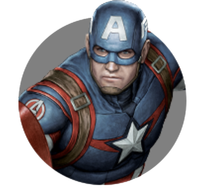

CAPTAIN AMERICA
by Maksim4ik
Posted on Mart 2, 2019 at 12:00 PM

КАПИТАН АМЕРИКА - СТИВ РОДЖЕРС
CAPTAIN AMERICA - STEVE ROGERS
Герой вне времени Стив Роджерс борется за свободу в качестве непоколебимого Капитана Америка.
Капитан Стивен «Стив» Грант Роджерс (Steven «Steve» Grant Rogers)- суперсолдат, ветеран Второй мировой войны и первый в мире супергерой. В результате сверхсекретной программы, известной как Проект «Перерождение», хилый подросток Стив Роджерс был трансформирован в мощного солдата со сверхчеловеческими возможностями.
Известный под прозвищем Капитан Америка (Captain America), Роджерс совершил множество подвигов во время войны. Вместе с собранной им командой солдат под названием Ревущая команда, Стив сражался с нацистской организацией ГИДРА, стремящейся захватить весь мир. Роджерс побеждает главаря организации, Красного Черепа, который собирался уничтожить множество городов с помощью Валькирии, мощного самолета-бомбардировщика. Но посадить самолет не представлялось возможным и Стив жертвует собой, потопив самолет в Арктике. Спустя 66 лет, нефтяниками были найдены остатки Валькирии, найден был и замороженный во льду Роджерс. Он был разморожен организацией Щ.И.Т. и через несколько дней очнулся в штабе организации.
Стив Роджерс оказался один в современном мире, который он с трудом узнавал. Когда Ник Фьюри, директор Щ.И.Т.а позвал Роджерса в очередной раз спасти мир, он незамедлительно надел форму Капитана Америка, взяв с собой свой знаковый щит, и вместе со своей силой, лидерством и серьёзным отношением оказал неоценимую помощь Мстителям во время Вторжения читаури.
После сражения бок о бок со Мстителями, Роджерс стал преданным агентом Щ.И.Т.а и участвовал во многих операциях вместе с Чёрной Вдовой, которая также была членом Мстителей. Вместе с Марией Хилл и Соколом они уничтожили проект «Озарение». После восстания ГИДРЫ он самостоятельно, при поддержке Сэма Уилсона начал искать своего друга Баки Барнса. Во время поиска Роджерс вновь собрал Мстителей, чтобы уничтожить остатки ГИДРЫ. Его лидерские качества пригодились вновь, когда появилась новая угроза миру — ИИ Альтрон. В отличие от большинства оригинальных Мстителей, Роджерс остался членом и лидером второго состава команды после Наступления Альтрона.
В ответ на массовую гибель гражданских по вине Мстителей, Капитану Америке было приказано Таддеусом Россом подписать Заковианский договор, который обязывает Мстителей действовать под руководством правительства. Роджерс и Тони Старк кардинально расходятся во мнениях относительно договора, а когда Зимний солдат становится целью, Роджерс нарушает данные ему приказы, чтобы защитить своего друга. Эти действия приводят к Гражданской войне Мстителей, в которой Роджерс вместе с небольшой командой противостоял команде Железного человека, чтобы защитить Барнса, со временем узнав, что ответственным за конфликт был Гельмут Земо. Когда Старк узнал, что Зимний солдат убил его родителей, Роджерс был вынужден спрятать Барнса в Ваканде с Чёрной Пантерой и отправиться в бега.
About

Maksim4ik
Age:14
Sex:male
maksdrobotushchenko@gmail.com